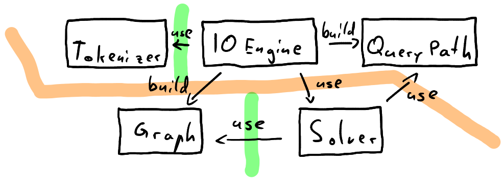
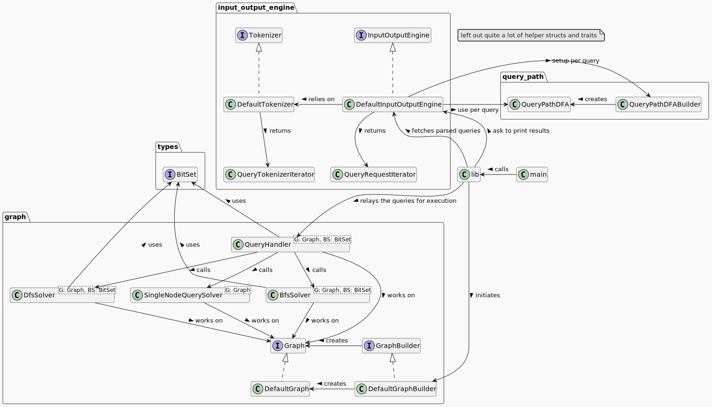
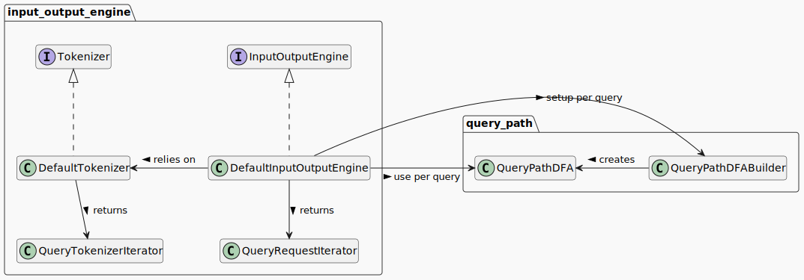
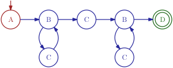
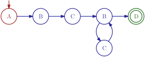

Cottonwood Graph Query Engine
4th September 2025
Cottonwood
Management
- Week 1:
- Design application architecture
- Define inter-team interfaces
- Define intra-team interfaces
- Implement correctly
- Week 2-4: Optimize

General Implementation Approach
- Simple, fix interfaces
- Independent development
- Free to optimize implementation
- Tests,
debug_asserts,
no unsafe- Rapid iteration
- Bugs easier to find
- Focus on correctness
- Focus on general optimizations (not edge cases)
Architecture Structure

Architecture Structure

DFA
(A) [-B-> (C)]{2,-} (D)
DFA Squashing
(A) [-B-> (C)]{1,-} (C) [-B-> (C)]{1,-}
(D)(A) [-B-> (C)]{2,-} (D)


Heuristic & Start Everywhere
() -->{1,-} () --> (A)
-B->{1,-} ()
- Insight: Not all start positions are equal
- Heuristic
- Idea: many restrictions at the start
- Approach: use DFA and rarity of labels
- Restrictions: graph structure unknown
- DFS uses startposition and turns around
BFS and when to use it
() -->{1,-} ()(A) -B->{1,-} (C)(A) -B->{1,7} (C)(A) [-B-> (M)]{1,-} (C)... --> (A) [-B-> (M)]{1,-} (C)- not:
(A) -B->{3,-} (C)
PAIRS ()-->()-->()-->()--> ...Lessons learned
- Getting work done in parallel & Test driven is fast
- Great interfaces are great
- Designing Heuristics is hard
- Rust Ownership is challenging but
- Rust has great tooling
- Iterators are cool
- no UB; easier debugging